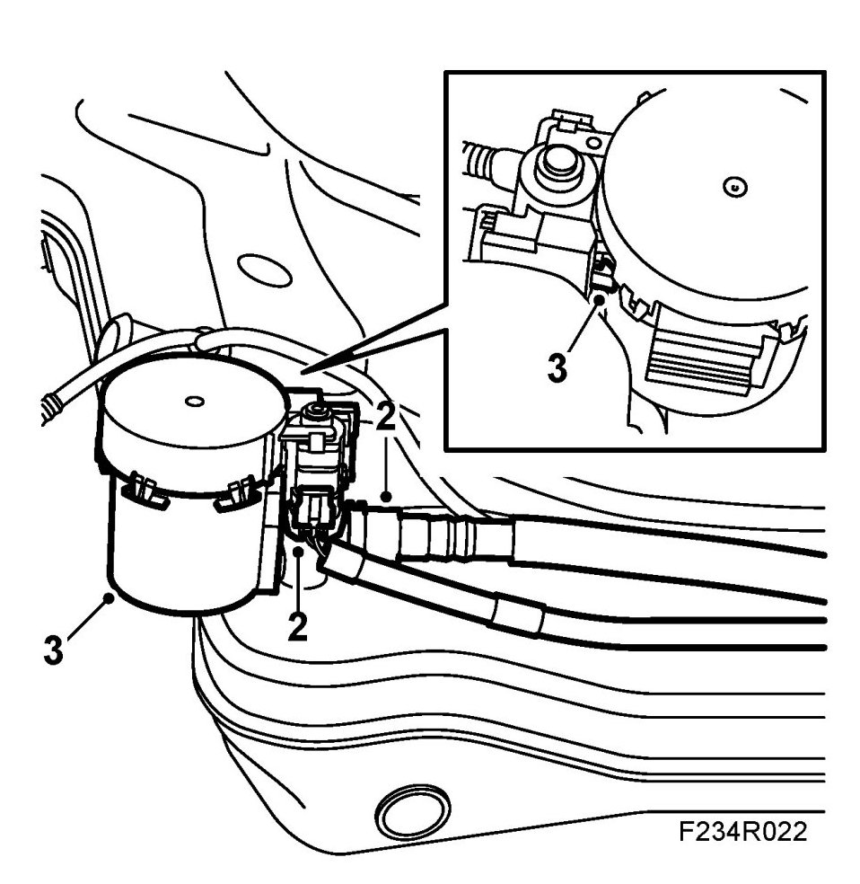
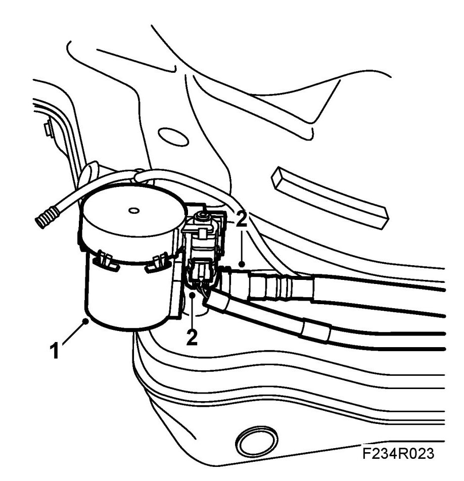

Fuel Shut-off Solenoid: Service and Repair
Fuel Tank Shut-off Valve (ORVR)
To remove
1. Remove the fuel tank.
2. Unplug the connector and disconnect the quick-release coupling from the shutoff valve.

3. Undo the catch and remove the shut-off valve.
To fit
1. Fit the shut-off valve.

2. Plug in the connector and connect the quick-release coupling to the shut-off valve.
3. Fit the fuel tank.